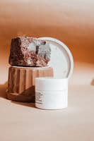

Silky, smooth handle
A soft, full finish with excellent surface smoothness.
TEXTILE AUXILIARIES / 02
Cationic textile softener
Fatty amidoamine softening chemistry for textile finishing. AeKomala delivers a silky, smooth handle while helping maintain whiteness, absorbency and reactive shades.
SUPPLIED AS Pale-yellow paste

A soft, full finish with excellent surface smoothness.
Minimal yellowing and minimal shade change on dyed fabric.
A hydrophilic finish suited to towels, terry and innerwear.
PRODUCT PROFILE
Practical information for your mill, from supplied form to application.
APPLICATION GUIDANCE
Disperse the paste under continuous stirring to a 5–10% stock. No heating is needed. Filter before storage.
Exhaust at pH 5–5.5 and 30–40 °C for 20 minutes, or use padding at about 20 °C.
Dry at 110–130 °C. Check handle, shade and absorbency on your own fabric.
| Exhaust, on fabric weight | 0.5–4.0% o.w.f. |
|---|---|
| Padding bath | 5–40 g/L |
| Exhaust liquor ratio | 5:1–20:1 |
| Padding pick-up | 60–90% |
Dosages below are for a 10% stock dilution. Rinse well after soaping. Anionic auxiliaries may cause precipitation and loss of performance; confirm compatibility by trial.
DOCUMENTATION